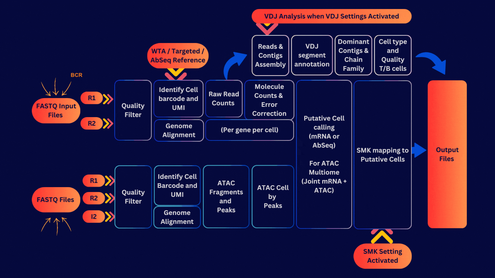

Welcome to the Quick Start Guide
This guide is designed to help you get started with the BD Rhapsody™ Pipeline.
The BD Rhapsody™ Pipeline is a analysis workflow that processes raw sequencing data from the BD Rhapsody™ system to generate experimental overview as well as output files that generated to proceed with secondary analysis. It is designed to be user-friendly and accessible to all BD Rhapsody™ customers.
What can the BD Rhapsody™ Pipeline do?
The BD Rhapsody™ Pipeline can perform several key analyses, including:
- Alignment of sequencing reads to a reference genome
- Quantification of gene expression levels
- Quality control of sequencing data
- Generation of visualizations and reports
Who is this Guide for?
This guide is intended for researchers who are new to the BD Rhapsody™ and need help setting up and running their first analysis, or for experienced users who need a refresher guide. No bioinformatics experience is needed to run your data on our cloud platform Vesera. This guide includes instructions for local installation users and pipeline bundles.
What do I need to get started?
To use the BD Rhapsody™ Pipeline, you will need:
- Raw Paired End sequencing data from the BD Rhapsody™ experiments
- A computer with internet access for Velsera User
- A web browser (Google Chrome or Mozilla Firefox recommended)
- A computer with Docker installed for Local Installation User
- A computer with Linux/Ubuntu environment for Pipeline Bundle User
What will I learn in this Guide?
This guide will walk you through the process of setting up and running your first analysis on the BD Rhapsody™ Pipeline. You will learn how to:
- Set up your pipeline
- Upload your sequencing data
- Select reference files
- Run the pipeline
- Review the output files
- Troubleshoot common issues
What are the benefits of using the BD Rhapsody™ Pipeline?
The BD Rhapsody™ Pipeline offers several key benefits:
- Automated analysis of sequencing data
- Standardized analysis workflows
- Interactive visualizations and reports
- Easy sharing of results with collaborators
- Access to advanced bioinformatics tools
Ready to get started?
Click on the steps in the menu on the left to begin setting up and running your first analysis on the BD Rhapsody™ Pipeline. In each steps, please use the manu on the right to navigate between different sections.
Need help?
If you have any questions or encounter any issues while using the BD Rhapsody™ Pipeline, please contact our support team. We are here to help you get the most out of your BD Rhapsody™ experiments.
Feedback
We welcome your feedback on this guide. If you have any suggestions for improvement or would like to report an error, please contact us at Feedback Email.
Disclaimer
This guide is provided for informational purposes only. The information contained in this guide is subject to change without notice. BD Biosciences reserves the right to make changes to the BD Rhapsody™ Pipeline and its associated documentation at any time.